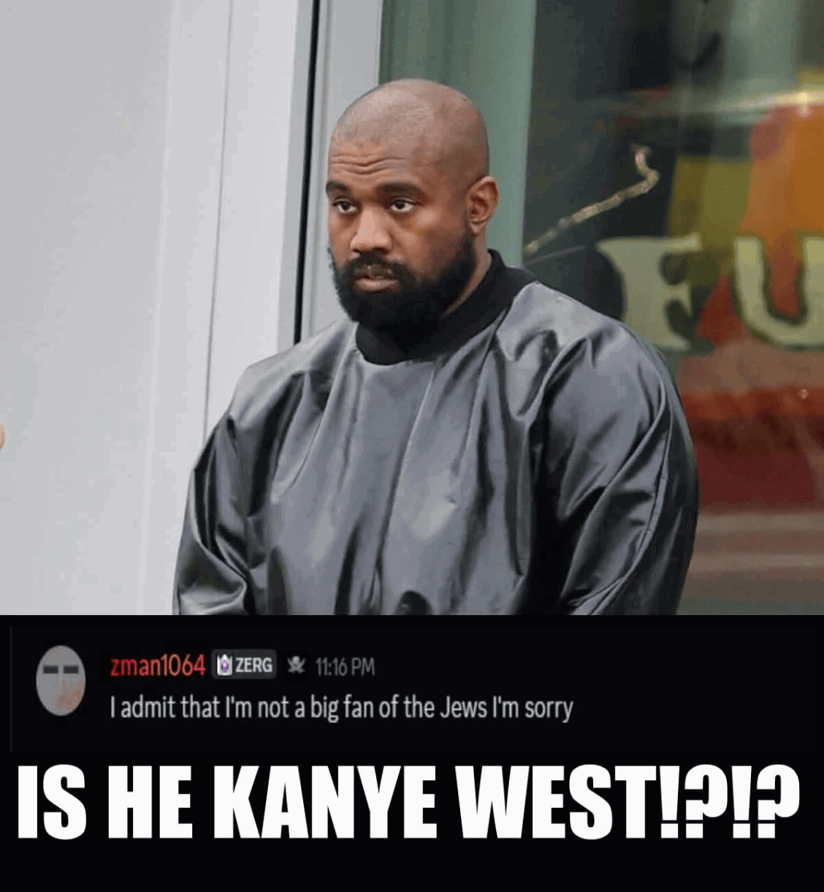

Kanye x Michael Jackson
Zman is a Youtuber, obviously
But what kind of Youtuber? He was orginally started uploading various Unturned videos to his channel. Until he become a minecraft youtuber since Unturned had a fallout.
Too lazy to explain the rest but he eventually become a minecraft duper for videos. Where he and his friends and some he is not friends with anymore, TheDuperTrooper
Even with controversies involving him and fallouts with friends. He still remainns a prominent figure in the duping community and current resides at around 260K Subscribers
